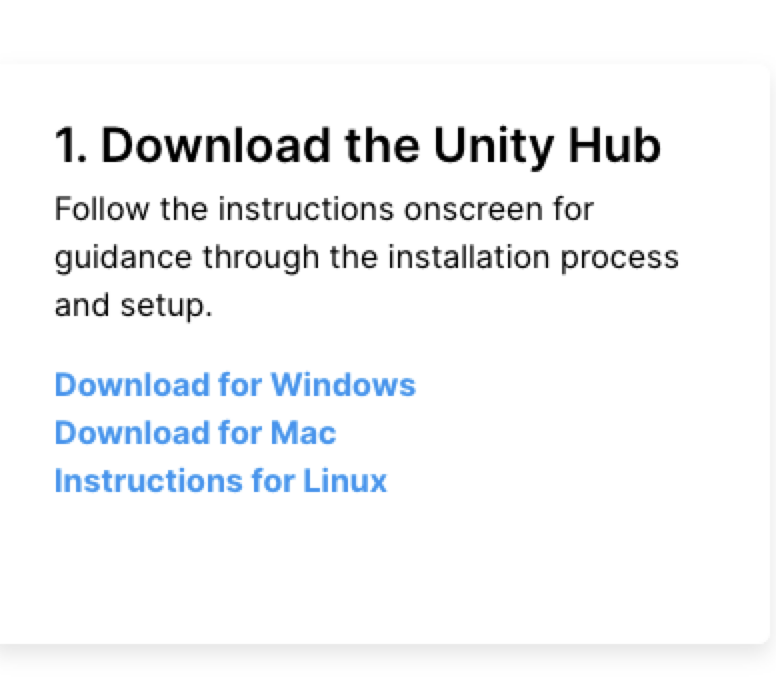
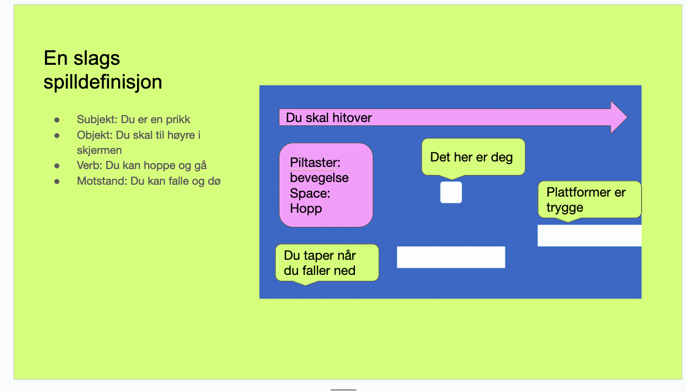

Opplegget er laget og gjennomført av Eivind Yu Nilsen og Finn. Sammendraget er skrevet av Finn.
Sammendrag fra fagkveld 3.Mai 2023. Tid for å gjennomføre: 1-2 timer.
Jeg prøver meg på en ny måte å oppdatere om hva som har skjedd på fagkveld. På tidligere fagkvelder har jeg tatt opptak, men lagt merke til at de sjeldent blir hørt på, samt at de har så dårlig lyd/bildekvalitet at de i praksis er ubrukelige.
Denne gangen har jeg fått en fra faggruppa til å ta notater. Jeg har funnet nettressurser som ligner på det vi gikk gjennom fagopplegget. Dette har jeg brukt til å lage et async alternativ som ikke skal være kjip mot ørene/hodet/sinnet.
Kurset var 4-delt.
Installer Unity
En introduksjon til hvorfor vi lager spillet vi lager
Vi lager et plattform spill med hjelp av Eivind
Vi utvider spillet vårt og gjør det vårt eget
Det er fortsatt mulig å få hjelp av Eivind og Finn til å følge kurset async. Gi oss en @ på slack i #spillutvikling. For å følge kurset følg punktene under. Om du har fulgt hele, eller deler av kurset si gjerne i fra til Finn på en måte som passer deg. Jeg bruker det for å bli bedre til å lage async opplegg, og å sjekke om det er noe verdi i å lage sånne kurssammendrag.
For mac:
Gå til https://unity.com/download
Last ned for macos (scroll litt lenger ned på sida)

Sett opp unity Hub og last ned Unity Editor
Konfigurer VScode:
Vi snakket litt om hva et spill er, bidra gjerne med hva du syns et spill er i #spillutvikling. Vårt spill kom til å basere seg på at du har en eller annen slags motstand for å nå et mål.
Jeg legger med sliden som ble brukt til å forklare spilldefinisjonen

Mange spill passer i en slik definisjon. Vi kom frem til at den passer ganske godt for bl.a. Mario og Cuphead.
Vi ønsket å vise at med noen barrierer og hopping er det fortsatt mulig å lage et utfordrende spill. For great fun and profit ble denne youtube videoen vist:
Her sliter en spilljournalist med å mestre mekanikkene i en turial.
For å følge kurset async, istedenfor en tåkete skjerm og dårlig lyd av prat fra kursholdere sender vi dere til Unitys eget tutorial senter og lar dere lage et 2D platformspill derfra.
For en no code approach bruk denne:
https://learn.unity.com/tutorial/video-2d-game-kit-walkthrough#5c7f8528edbc2a002053b76d
Hvis du kunne tenkt deg å lære scripting bruk denne:
(Jeg sitter uten headset så har ikke sjekket det de sier, men videoene så bra ut da jeg scrubbet dem 🙈)
Be gjerne om hjelp fra #spillutvikling på Slack!